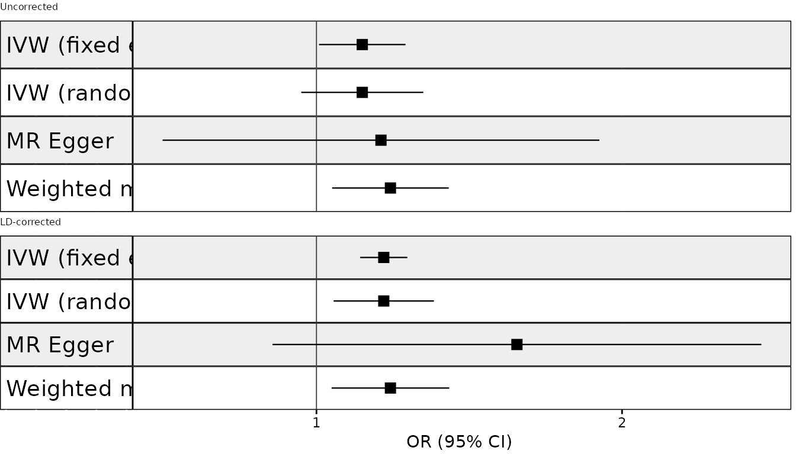
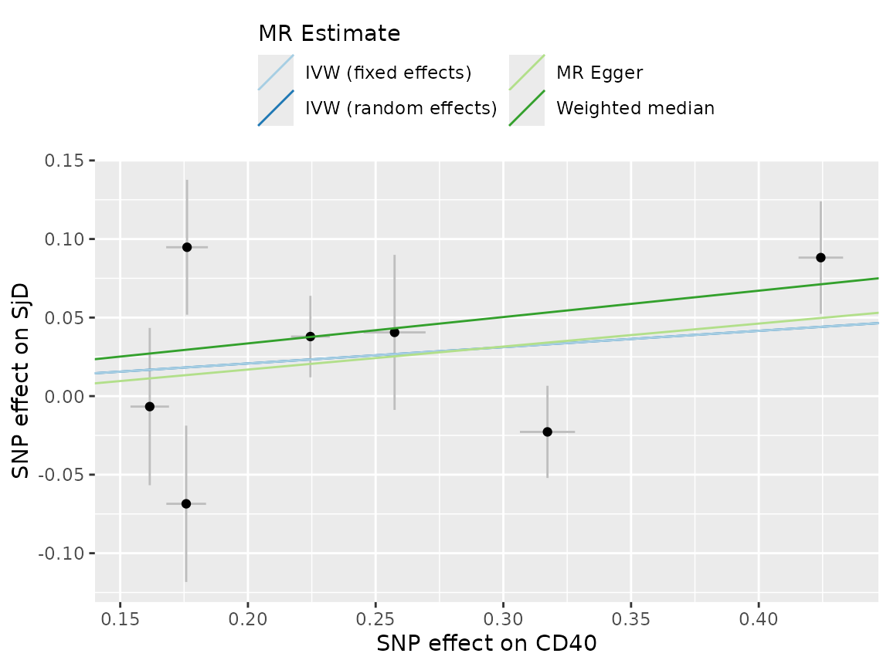
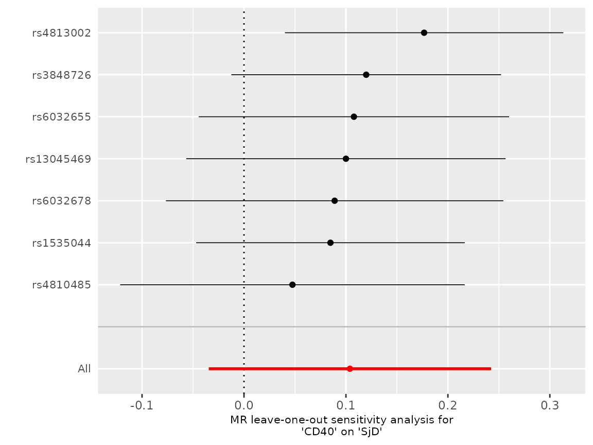
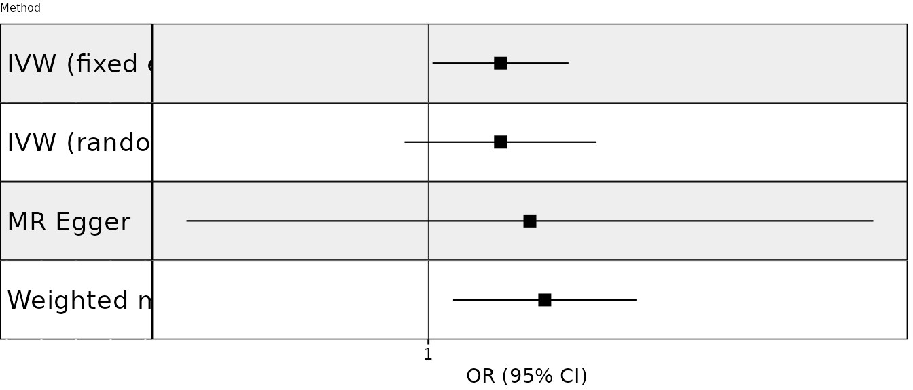
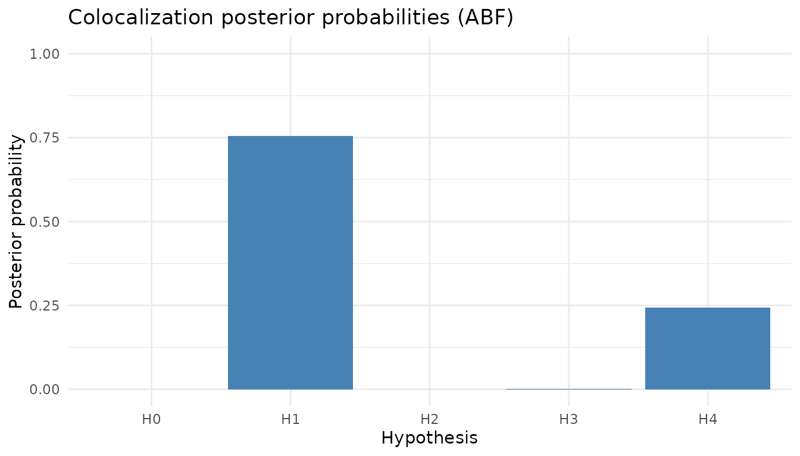
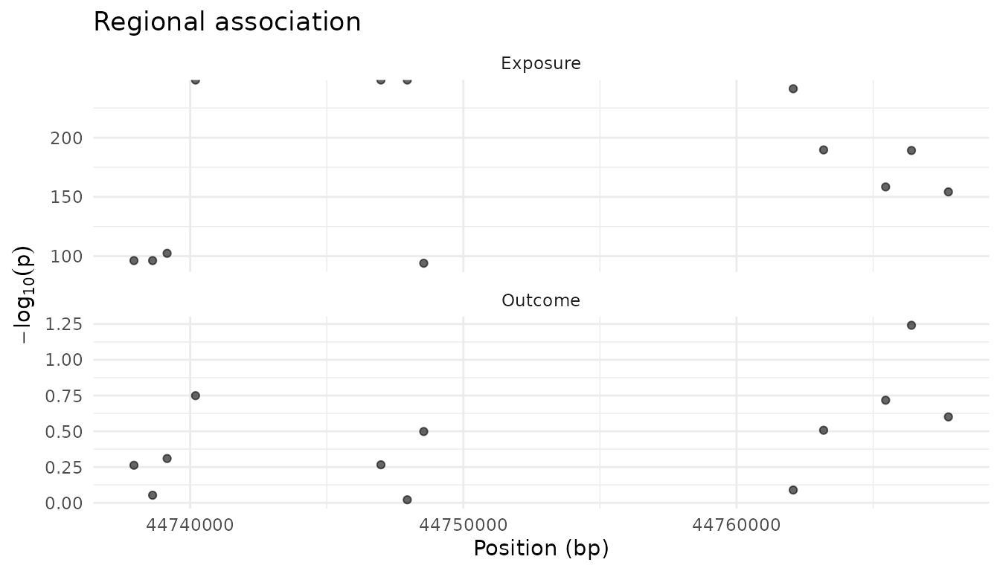

mrpipeline User Guide
mrpipeline-user-guide.RmdOverview
mrpipeline runs two-sample Mendelian randomisation (MR)
and colocalisation for molecular exposures – currently protein QTLs
(deCODE, UKB-PPP) and single-cell eQTLs – against GWAS outcomes. It is
built for the drug-target question “does genetically proxied
perturbation of this protein affect this disease?”, so its default mode
is cis-MR: instruments are drawn from a window around
the gene encoding the protein.
It wraps TwoSampleMR,
MendelianRandomization and coloc behind two
calls, run_mr() and run_coloc(), which each
return a single result object (mr_result,
coloc_result) carrying the estimates, the instruments, the
harmonisation record and every diagnostic – so a result can be
inspected, plotted and audited after the fact.
About the examples. Evaluated examples on this page
use the data bundled with the package: cd40_exposure (CD40
protein, UKB-PPP), sjogren_outcome (Sjogren’s disease) and
a 50-SNP LD reference panel of real 1000 Genomes EUR genotypes. Their
output is produced when the page is built, not typed. The outcome data
are partly synthetic (49 of its 50 SNPs), so the
numbers illustrate the mechanics and are not a finding about CD40 and
Sjogren’s disease. Examples that need network access or your own files
are marked as not run.
Gene Coordinate Lookup
Use get_gene_coords() to programmatically retrieve gene
coordinates from Ensembl via biomaRt. This is useful for defining cis
regions in run_mr() and run_coloc() without
hard-coding coordinates. These two examples query Ensembl over the
network, so they are not run here; the output shown is
representative.
# GRCh38 (default)
coords <- get_gene_coords(c("CD40", "APOE"))
coords
#> # A tibble: 2 x 4
#> hgnc_symbol chromosome start end
#> <chr> <chr> <int> <int>
#> 1 APOE 19 44905791 44909393
#> 2 CD40 20 44746911 44758502
# GRCh37
coords_37 <- get_gene_coords("CD40", build = "grch37")The returned tibble can feed directly into run_mr() and
run_coloc():
cd40 <- get_gene_coords("CD40", build = "grch38")
mr_res <- run_mr(
exposure = exposure_data,
exposure_id = "CD40",
outcome = outcome_data,
outcome_id = "SjD",
instrument_region = list(
chromosome = cd40$chromosome,
start = cd40$start,
end = cd40$end
)
)Controlling PLINK Resource Usage
When running many parallel jobs (e.g. on an HPC cluster), PLINK’s
default behaviour of auto-detecting available threads and memory can
cause problems – each worker may try to reserve half the node’s RAM. Use
plink_threads and plink_memory to cap resource
usage per call.
You can set these per-call, via R options, or via environment variables (placeholder data; not run):
# Per-call (highest priority)
result <- run_mr(
exposure = exposure_data, exposure_id = "CD40",
outcome = outcome_data, outcome_id = "SjD",
bfile = "/path/to/ld_ref",
plink_threads = 1,
plink_memory = 2000
)
# Via R options (apply to all subsequent calls in the session)
options(
mrpipeline.plink_threads = 1,
mrpipeline.plink_memory = 2000
)
# Via environment variables (e.g. in .Renviron or a job script) -- set
# MRPIPELINE_PLINK_THREADS to 1 and MRPIPELINE_PLINK_MEMORY to 2000Priority order: explicit argument > R option > environment
variable > PLINK auto-detect (NULL). The same parameters
are available in run_coloc().
Setting Up an LD Reference Panel
Several steps need linkage disequilibrium (LD) between variants,
which mrpipeline computes with PLINK from a reference panel
of genotypes:
| Step | Without bfile
|
With bfile
|
|---|---|---|
Instrument clumping in run_mr()
|
OpenGWAS API (needs an OPENGWAS_JWT token;
rate-limited) |
Local PLINK |
run_mr(ld_correct = TRUE) |
Error | LD matrix of the instruments |
run_coloc() (SuSiE, coloc.signals, LD
alignment) |
Required – bfile has no default |
LD matrix of the region |
plot(coloc_res, type = "locuszoom") |
Required | LD colouring |
A local panel is recommended for anything beyond a quick look: it is
reproducible (the API’s panel can change), it is not rate-limited, which
matters when you batch many proteins, and it is the only option for
ld_correct and colocalisation.
File structure. bfile is a PLINK 1
binary fileset given by its prefix – the path without an
extension. bfile = "/data/ld/EUR" expects
/data/ld/EUR.bed, /data/ld/EUR.bim and
/data/ld/EUR.fam to sit side by side. Variant IDs in the
.bim must be rsIDs matching your summary statistics, and
the panel must be on the same genome build as your data.
Getting a panel. Use one matching your GWAS samples’ ancestry. The MRC-IEU distributes the 1000 Genomes phase 3 panels (GRCh37, rsIDs) used by OpenGWAS, split by super-population:
# Not run: a ~1.6 GB download.
download.file("http://fileserve.mrcieu.ac.uk/ld/1kg.v3.tgz", "1kg.v3.tgz")
untar("1kg.v3.tgz", exdir = "ld_ref")
bfile <- "ld_ref/EUR" # ld_ref/EUR.bed, ld_ref/EUR.bim, ld_ref/EUR.famThe package also bundles a tiny panel – real 1000 Genomes EUR
genotypes for 503 individuals at the 50 CD40-region SNPs in
cd40_exposure – which the evaluated examples on this page
use:
bfile <- sub(
"\\.bed$",
"",
system.file("extdata", "ld_ref.bed", package = "mrpipeline")
)
basename(bfile)
#> [1] "ld_ref"It only covers those 50 SNPs, so it is for learning the package, not
for analysis. The script that built it, data-raw/ld_ref.R
in the package source, shows how to cut a panel for any region straight
from the 1000 Genomes VCFs.
Formatting GWAS Data
run_mr() and run_coloc() take an
exposure in TwoSampleMR format (SNP,
beta.exposure, se.exposure,
effect_allele.exposure, other_allele.exposure,
eaf.exposure, pval.exposure, …) and an
outcome in the format_gwas() outcome
schema (rsids, chr, pos,
beta, se, eaf, pval,
n, effect_allele, other_allele,
phenotype). format_gwas() produces either from
almost any summary statistics file. Source-specific wrappers exist for
deCODE (format_pqtl_decode()), UKB-PPP
(format_pqtl_ukbppp()) and OneK1K single-cell eQTLs
(format_single_cell_onek1k()); they already know their
source’s allele convention, so the steps below are for everything
else.
The walkthrough in this section follows a real analysis – an AMD
outcome GWAS and a regenie exposure – from files on disk, including a
deliberately mis-oriented file. Those files do not ship with the
package, so this code is not run when the page is
built; the #> lines are representative output, abridged
where marked ....
Step 1: inspect the header
Look at the column names before formatting anything:
path <- "genomics_data/outcome_GWAS/AMD/IAMDGC_AMD.tsv.gz"
names(data.table::fread(path, nrows = 5))
#> [1] "SNP" "CHR" "POS" "A1" "A2" "BETA" "SE" "PVALUE" "N" "FRQ" ...Compare them against the alias table in ?format_gwas
(section Column normalisation). Columns in the table are
renamed automatically.
Step 2: map any columns the alias table does not know
Anything not recognised needs a col_map entry. Other
switches: log10_pval = TRUE for -log10(p)
columns, n = ... when the file has no sample-size column,
bim_path when rsIDs (or chr/pos) are missing, and
marker_col for compound CHR:POS:...
identifiers.
col_map <- list(pval = "PVALUE")Step 3: decide what A1 means
This is the step that is easy to skip and expensive to get wrong. Two
conventions share the names A1/A2:
| Convention | A1 |
A2 |
BETA / FRQ refer to |
|---|---|---|---|
| PLINK, regenie, METAL, most GWAS Catalog deposits | effect allele | other allele | A1 |
| EPACTS, RAREMETAL, VCF-derived tables | REF | ALT | A2 |
format_gwas() assumes the first. A file using the second
is silently read with effect and other allele swapped, and because
harmonisation then aligns alleles by letter, every outcome beta ends up
with the wrong sign while the results look entirely plausible. To
establish which convention a file uses:
Read the README/header.
ALLELE1/A1FREQ(regenie) oreffect_alleleare explicit;REF/ALTmeans the effect is per ALT.-
Rule out a minor allele frequency. A MAF never exceeds 0.5, so if the frequency column does, it tracks one fixed allele:
Look up two or three variants. Compare
FRQwith a known population frequency (gnomAD, Ensembl, orplink --freqon your LD panel) to see whether it describesA1orA2, and check a variant whose effect direction is established for the trait. For AMD, CFH rs1061170: the C allele is the risk allele (OR about 2.5). In the IAMDGC file that row readsA1 = C, A2 = T, BETA = -0.87– read perA1the best-replicated AMD risk allele would be protective, soBETAis perA2.
If A1 is REF, swap the mapping (user aliases take
precedence):
col_map <- list(pval = "PVALUE", effect_allele = "A2", other_allele = "A1")Step 4: call format_gwas()
outcome <- format_gwas(
path = path,
phenotype_id = "AMD",
col_map = col_map
)
exposure <- format_gwas(
path = "genomics_data/exposure_GWAS/RPS/rps.regenie",
phenotype_id = "RPS",
type = "exposure",
col_map = list(rsids = "ID", pval = "LOG10P"),
log10_pval = TRUE
)Step 6: the harmonisation safety net
run_mr() and run_coloc() run an allele
orientation check after harmonisation. Among non-palindromic SNPs with
both allele frequencies, it counts how many have
eaf.exposure closer to 1 - eaf.outcome than to
eaf.outcome. Different ancestries produce scatter; swapped
alleles produce systematic complementarity, so a clear majority (over
70% of at least 10 SNPs) fails the check. run_mr()
harmonises its instruments together with up to 1000 further SNPs shared
by the two datasets, so the check works even for a cis-MR with three
instruments.
result <- run_mr(exposure, "RPS", outcome, "AMD", instruments = ivs)
#> Error in `run_mr()`:
#> ! Possible effect/other allele mis-assignment between "RPS" and "AMD":
#> 987/1003 (98%) non-palindromic SNPs have eaf.exposure closer to
#> 1 - eaf.outcome than to eaf.outcome.
#> i This usually means one of the two datasets labels A1/A2 as REF/ALT ...
#> i Worst offenders (effect allele in brackets):
#> rs117756744 (G): eaf.exposure = 0.979, eaf.outcome = 0.015, 1 - eaf.outcome = 0.985
#> ...
#> ! Palindromic SNPs in this pair were strand-aligned from these mis-assigned
#> frequencies, so their alignment is unreliable even where the beta looks unchanged.
#> ! The check cannot tell WHICH dataset is wrong. ...
#> > Fix: re-run `format_gwas()` on the offending dataset with
#> `col_map = list(effect_allele = "A2", other_allele = "A1")` ...
chk <- last_allele_check() # full record, stored on pass and fail
chk$status
chk$variants[order(-chk$variants$score), ][1:10, ]Two things the check cannot do. It cannot tell which dataset
is wrong – the comparison is symmetric – so break the tie with an
independent frequency reference (plink --freq on the LD
panel, or ref_frq in format_gwas()), a
known-direction variant as in Step 3, or provenance (a dataset that has
harmonised cleanly against other outcomes is not the suspect). And it
does not flag palindromic SNPs: their strand is resolved from
the frequencies, so a mis-assigned effect allele and a mis-assigned
frequency cancel and the beta can come out identical either way. Once
the check fails, treat every palindromic alignment in that pair as
unreliable and re-run after fixing the file.
Use allele_check = "warn" to continue with a warning, or
"none" to skip the condition (the record is still stored).
Both are visible in result$params$allele_check, which keeps
the decision reviewable.
The check has a cost that scales with the size of the two datasets
you pass in, not with the number of instruments, because it has to find
the SNPs the two share before it can sample them. For a genome-wide
exposure against a genome-wide outcome (tens of millions of rows between
them) budget a few seconds per run_mr() call; a 200k-SNP
exposure takes well under a second. It runs on every call and is not
cached across calls that share a pair, so a pipeline that calls
run_mr() twenty times against one outcome pays it twenty
times. result$timing[["allele_check"]] reports it,
alongside the other steps, so you can see where a slow run spends its
time.
When the check cannot run
The check needs allele frequencies in both datasets. OR-only GWAS files are common and often ship without a frequency column, so no verdict is possible. That is not a pass, and it says so at warning level (issue #21):
#> Warning:
#> ! Allele orientation could not be checked for "RPS" vs "Malignant melanoma":
#> no harmonised variants carry allele frequencies in both datasets.
#> ! Orientation is unverified for this pair. A mis-assigned effect allele
#> inverts every estimate and leaves no other trace, so an unchecked pair is
#> not the same as a clean one.
#> i Verify it by anchoring on a variant whose effect direction for this trait
#> is established beyond doubt -- no frequencies needed. See `?format_gwas`,
#> section What does A1 mean? (subsection If the check cannot run).Verify orientation by hand instead: anchor on a variant whose
direction for the trait is beyond doubt and see whether the file agrees
with the literature. For a cutaneous melanoma GWAS, rs1805007 (MC1R),
rs16891982 (SLC45A2) and rs12203592 (IRF4) settle it at once – read with
the alleles swapped, all three would contradict well-replicated melanoma
genetics. ?format_gwas (If the check cannot run)
works the example through and covers the two checks that come free in
many designs: a positive control that comes out the wrong way makes
orientation a prime suspect, and two independent GWAS of the same trait
should agree in direction at shared variants.
Once confirmed that way, allele_check = "none" silences
the warning for that pair – and, being recorded in
result$params$allele_check, the decision stays
reviewable.
Inspecting what harmonisation did
summary() prints a harmonisation breakdown, and the full
unfiltered frame is on the result object as
$harmonisation:
summary(result)
#> -- Harmonisation --
#> * 120 candidate SNPs -> 95 kept, 25 dropped
#> * Flagged: 10 palindromic, 8 ambiguous, 7 incompatible alleles
# Which variants, and why
h <- result$harmonisation
h[!h$mr_keep, c("SNP", "palindromic", "ambiguous", "remove")]The flags overlap – every ambiguous variant is palindromic – so they
do not sum to the dropped total, and which of them actually costs a
variant its place depends on harmonise_action (below). A
variant can also be dropped for missing beta/se, which no allele flag
shows; summary() reports those as incomplete
beta/se.
For run_mr(), $instruments remains the kept
set the estimates are computed from, and $harmonisation
explains the rest. For run_coloc(),
$harmonised_data is still exactly the SNPs the analysis ran
on – row-aligned with the coloc datasets, which the plots depend on –
and $harmonisation sits alongside it.
Choosing how palindromes are harmonised
harmonise_action (on both run_mr() and
run_coloc()) sets the action level
TwoSampleMR::harmonise_data() uses:
harmonise_action |
Behaviour |
|---|---|
| 1 | Assume all alleles are on the forward strand: no frequency-based flip |
| 2 (default) | Infer the positive strand, resolving palindromes from allele frequencies |
| 3 | As 2, but drop every palindromic, ambiguous or incompatible SNP |
Only palindrome handling differs – non-palindromic variants are aligned by allele letter at every level, so the orientation check’s verdict is the same whichever you pick.
Reach for 3 when the frequencies level 2
relies on cannot be trusted. That is exactly the situation after a
failed orientation check: a swapped effect allele and a swapped
frequency cancel for a palindromic SNP, so its strand call is unreliable
even where the beta looks unchanged. It also covers the case above,
where no frequencies are available at all – level 2 has
nothing to resolve palindromes with, so dropping them is the honest
choice:
result <- run_mr(
exposure, "RPS", outcome, "Malignant melanoma",
instruments = ivs,
harmonise_action = 3, # drop palindromic SNPs rather than guess their strand
allele_check = "none" # orientation confirmed by anchor variant instead
)
result$params$harmonise_actionThe cost is instruments: dropping palindromes can remove a meaningful
share of a small cis-MR’s SNPs, so check
result$results$nsnp afterwards.
Running MR Analyses
Cis-MR (quick start with API clumping)
A cis-MR needs an exposure, an outcome and the gene’s region. Setting
instrument_region selects genome-wide significant variants
within 100 kb of it, and with no bfile they are LD-clumped
through the OpenGWAS API:
# Not run: needs network access and an OpenGWAS token -- see
# ieugwasr::get_opengwas_jwt().
mr_api <- run_mr(
exposure = cd40_exposure,
exposure_id = "CD40",
outcome = sjogren_outcome,
outcome_id = "SjD",
instrument_region = list(chromosome = "20", start = 44746911, end = 44758502)
)Without a methods argument run_mr() runs
its default set: random-effects IVW, MR-Egger, weighted median,
MR-PRESSO, contamination mixture and Steiger filtering.
Cis-MR with local LD reference (recommended)
With a local panel the same analysis is reproducible and offline. This is the analysis the rest of the MR sections inspect:
set.seed(1) # the weighted median's standard error is bootstrapped
mr_res <- run_mr(
exposure = cd40_exposure,
exposure_id = "CD40",
outcome = sjogren_outcome,
outcome_id = "SjD",
instrument_region = list(chromosome = "20", start = 44746911, end = 44758502),
rsq_thresh = 0.3,
bfile = bfile,
methods = c(
"ivw_random", "ivw_fixed", "egger", "weighted_median",
"steiger", "pleiotropy", "heterogeneity", "loo"
)
)Two arguments are worth a note. rsq_thresh = 0.3 clumps
far more leniently than the default of 0.001: against real LD the
default keeps a single CD40 instrument (a Wald ratio, with no
sensitivity analyses possible), while 0.3 keeps 7. Instruments that
correlated are counted as independent by standard IVW, which is what LD-corrected MR below is for. And
methods names every estimator and diagnostic explicitly, so
the analysis says what it ran.
$results holds one row per estimator:
mr_res$results[, c("method", "nsnp", "b", "se", "pval", "or")]
#> method nsnp b se pval or
#> 1 IVW (random effects) 7 0.1039171 0.07064066 0.14127327 1.109508
#> 2 IVW (fixed effects) 7 0.1039171 0.05004810 0.03786213 1.109508
#> 3 MR Egger 7 0.1463184 0.25272353 0.58771400 1.157565
#> 4 Weighted median 7 0.1677675 0.06749428 0.01293133 1.182662Sensitivity analyses
Every estimator makes a different assumption about invalid instruments, so agreement between them is the reassurance, and disagreement the lead:
-
IVW (
ivw_random,ivw_fixed) assumes every instrument is valid, or that pleiotropy averages to zero. -
MR-Egger (
egger) allows directional pleiotropy through an intercept, at the cost of much lower precision;pleiotropytests that intercept against zero. -
Weighted median (
weighted_median) is consistent if at least half of the weight comes from valid instruments. -
MR-PRESSO (
presso) and the contamination mixture (conmix) detect or down-weight outlying instruments. Both are in the defaultmethods; seemr_methods()below for everything available.
Here the IVW and weighted-median estimates are 0.104 and 0.168;
Egger’s slope, 0.146, is far less precise (SE 0.253). The Egger
intercept, Cochran’s Q (heterogeneity, needs >= 2
instruments) and the leave-one-out estimates (loo, needs
>= 3) each have their own field:
mr_res$pleiotropy[, c("egger_intercept", "se", "pval")]
#> egger_intercept se pval
#> 1 -0.01235622 0.07013144 0.8670611
mr_res$heterogeneity[, c("method", "Q", "Q_df", "Q_pval")]
#> method Q Q_df Q_pval
#> 1 MR Egger 11.87949 5 0.03647691
#> 2 Inverse variance weighted 11.95324 6 0.06302013
mr_res$loo[, c("SNP", "b", "se", "p")]
#> SNP b se p
#> 1 rs13045469 0.09998913 0.07988087 0.21066895
#> 2 rs1535044 0.08481539 0.06723545 0.20714018
#> 3 rs3848726 0.11985840 0.06750042 0.07578748
#> 4 rs4810485 0.04753534 0.08620818 0.58135829
#> 5 rs4813002 0.17668764 0.06965768 0.01119625
#> 6 rs6032655 0.10780563 0.07766969 0.16513664
#> 7 rs6032678 0.08891643 0.08444395 0.29235754
#> 8 All 0.10391708 0.07064066 0.14127327The leave-one-out table re-fits IVW without each SNP in turn, and its
last row, All, is the full-set estimate. Here dropping
rs4813002 moves the estimate the most, from 0.104 to 0.177 – in a small
instrument set one variant can carry much of the answer.
Which methods can I run?
mr_methods() returns the table run_mr()
itself dispatches from – the shortcut names, what each one runs, whether
it is a fixed- or random-effects estimator, whether
ld_correct = TRUE applies to it, how many instruments it
needs, and where its result lands on the mr_result:
tab <- mrpipeline::mr_methods()
# Backticks render the field names as code, which keeps MathJax from reading
# `$results` ... `$steiger` as an inline formula.
tab$output <- paste0("`", tab$output, "`")
knitr::kable(tab)| shortcut | description | label | output | model | ld_correctable | min_instruments |
|---|---|---|---|---|---|---|
| ivw_random | IVW, multiplicative random effects | IVW (random effects) | $results |
random | TRUE | 2 |
| ivw_fixed | IVW, fixed effects | IVW (fixed effects) | $results |
fixed | TRUE | 2 |
| egger | MR Egger regression | MR Egger | $results |
random | TRUE | 3 |
| weighted_median | Weighted median | Weighted median | $results |
NA | FALSE | 3 |
| presso | MR-PRESSO outlier test | MR-PRESSO | $results |
NA | FALSE | 3 |
| conmix | Contamination mixture | ConMix | $results |
NA | FALSE | 2 |
| steiger | Steiger directionality test | NA | $steiger |
NA | FALSE | 1 |
| pleiotropy | Egger intercept (pleiotropy) test | NA | $pleiotropy |
NA | TRUE | 3 |
| heterogeneity | Cochran’s Q heterogeneity test | NA | $heterogeneity |
NA | TRUE | 2 |
| loo | Leave-one-out IVW | NA | $loo |
NA | TRUE | 3 |
mr_methods(detail = "full") adds the automatic
Wald-ratio path (used when exactly one instrument survives), the raw
TwoSampleMR passthrough (any
TwoSampleMR::mr_method_list()$obj name with no shortcut,
e.g. "mr_raps"), and the function that actually runs on
each LD path. The same table is rendered into ?run_mr.
Because run_mr() reads it rather than a separate list, it
cannot drift from what the function accepts.
The IVW shortcuts name the estimator explicitly:
ivw_random is multiplicative random effects (the standard
error is inflated by max(RSE, 1), never deflated) and
ivw_fixed is fixed effects (no overdispersion adjustment).
With under-dispersed instruments the two coincide exactly. The former
names "ivw" and "ivw_fe" still work but
warn.
LD-corrected MR
Cis-MR instruments are often in linkage disequilibrium with one
another, and standard IVW treats every instrument as an independent look
at the causal effect – two correlated SNPs are counted twice and the
standard error comes out too small. ld_correct = TRUE
computes the instruments’ LD matrix from bfile, re-orients
it to the exposure’s effect alleles, and fits the IVW and Egger
estimators by generalised least squares with that matrix as the weight
structure (through MendelianRandomization with
correl = TRUE).
The example repeats the analysis above – same region, same
rsq_thresh = 0.3 – with the correction switched on:
corrected <- run_mr(
exposure = cd40_exposure,
exposure_id = "CD40",
outcome = sjogren_outcome,
outcome_id = "SjD",
instrument_region = list(chromosome = "20", start = 44746911, end = 44758502),
rsq_thresh = 0.3,
bfile = bfile,
ld_correct = TRUE,
methods = c("ivw_random", "ivw_fixed", "egger", "weighted_median", "heterogeneity")
)
#> Warning: "weighted_median" has no LD-corrected form; running
#> uncorrected.
corrected$results[, c("method", "b", "se", "model", "ld_corrected")]
#> method b se model ld_corrected
#> 1 IVW (random effects) 0.1526528 0.05802051 random TRUE
#> 2 IVW (fixed effects) 0.1526528 0.02730979 fixed TRUE
#> 3 MR Egger 0.4547481 0.28286288 random TRUE
#> 4 Weighted median 0.1677675 0.06810721 <NA> FALSEIts instruments are the 7 from before, with pairwise |r| up to 0.53
in the panel – a typical lenient cis-MR set, and one with something to
correct for. Without ld_correct (mr_res,
above) the IVW estimate was 0.104 (random-effects SE 0.071,
fixed-effects SE 0.050) and the Egger slope 0.146: treating correlated
instruments as independent changes the answer, not just its
precision.
Note that the corrected standard errors here are smaller.
Correction does not always widen them: what matters is not
r itself but the correlation between the SNPs’ ratio
estimates, which is r times the sign of
beta.exposure_i * beta.exposure_j. Where that is positive
the two instruments are counted twice over and correction widens the SE;
where it is negative their errors partly cancel and GLS extracts
more information than the independent-instruments model. In
this set 11 of the 21 pairs are negative, including 5 of the 6 involving
rs4810485 – the largest-effect, and so most heavily weighted, instrument
– and the standard errors fall. Such a gain leans entirely on the
reference panel’s LD matching the GWAS sample’s, so treat a large drop
with caution.
Every $results row states the estimator that produced
it: model says whether it was a fixed- or random-effects
fit, and ld_corrected whether the LD matrix was used. Only
ivw_random, ivw_fixed and egger
have a correlated form; any other estimator you request runs on the
uncorrected data and warns by name – the warning above – so
ld_correct is never silently ignored.
summary(corrected) lists which methods it was and was not
applied to, and print(corrected) tags the primary row
[LD-corrected].
The diagnostics are corrected too. Cochran’s Q, the Egger intercept
and the leave-one-out estimates are all answers to “how much do my
instruments disagree?”, and that question changes once the instruments
are correlated – the generalised Q for a correlated set can differ
materially from the naive one. So under ld_correct = TRUE,
$heterogeneity, $pleiotropy and
$loo come from the correlated fits, and each carries its
own ld_corrected column on both arms:
corrected$heterogeneity[, c("method", "Q", "Q_df", "Q_pval", "ld_corrected")]
#> method Q Q_df Q_pval ld_corrected
#> 1 MR Egger 21.87861 5 0.0005521611 TRUE
#> 2 Inverse variance weighted 27.08182 6 0.0001397849 TRUEUncorrected, the same instruments give an IVW Q of 11.95 (p = 0.063): here the naive test understates the disagreement between correlated instruments.
The method labels in $heterogeneity stay
TwoSampleMR’s on both arms (Q does not depend on the fixed/random
choice), so the column is the only thing that differs. Steiger filtering
is the one diagnostic left as-is: it compares per-SNP r^2 values and
involves no weight matrix.
Two things to know:
-
ivw_randomandivw_fixedmean the same thing at every instrument count.MendelianRandomization’s own default would switch to fixed effects below 4 instruments – a common situation in cis-MR – sorun_mr()pins the model explicitly on the shortcut. Ask for the estimator you want by name. - An LD-corrected run can have fewer instruments than the same call uncorrected. Instruments absent from the reference panel, or with ambiguous palindromic alleles, are dropped when the matrix is aligned to the exposure’s effect alleles.
Because of the second point, one mr_result is always one
instrument set under one weight matrix – ld_correct is a
single switch, not a request for both arms. To compare corrected and
uncorrected estimates, run both – here mr_res from above is
the uncorrected arm – and section them in one forest plot:
forest_plot(list("Uncorrected" = mr_res, "LD-corrected" = corrected))
Excluding genomic regions
Use the exclude_regions argument to remove instruments
falling in specific genomic regions. This is commonly used to exclude
the MHC region on chromosome 6, which can introduce spurious
associations due to complex LD structure.
Supply a data frame with columns chr,
start, and end. The bundled data cover only
the CD40 region on chromosome 20, so these two examples use placeholder
datasets and are not run:
# Exclude MHC region (GRCh37 coordinates: chr6:28,477,797-33,448,354)
mhc_grch37 <- data.frame(chr = "6", start = 28477797, end = 33448354)
result <- run_mr(
exposure = exposure_data,
exposure_id = "PCSK9",
outcome = outcome_data,
outcome_id = "CHD",
exclude_regions = mhc_grch37
)
# GRCh38 coordinates: chr6:28,510,120-33,480,577
mhc_grch38 <- data.frame(chr = "6", start = 28510120, end = 33480577)You can exclude multiple regions by stacking rows. For example, when studying age-related macular degeneration (AMD), you might exclude both the CFH and ARMS2/HTRA1 loci:
amd_exclusions <- data.frame(
chr = c("1", "10"),
start = c(196621008, 124214077),
end = c(196716634, 124274424)
)
result <- run_mr(
exposure = exposure_data,
exposure_id = "CFH",
outcome = outcome_data,
outcome_id = "AMD",
exclude_regions = amd_exclusions
)Manual instrument sets
You can bypass automatic instrument selection by supplying a
character vector of rsIDs to the instruments argument – for
example, a pre-specified pair of variants:
manual_res <- run_mr(
exposure = cd40_exposure,
exposure_id = "CD40",
outcome = sjogren_outcome,
outcome_id = "SjD",
instruments = c("rs4810485", "rs4813002"),
methods = c("ivw_random", "egger", "weighted_median", "heterogeneity", "loo")
)
manual_res$results[, c("method", "nsnp", "b", "se")]
#> method nsnp b se
#> 1 IVW (random effects) 2 0.08078569 0.1391913Manual instruments are used as given: no p-value threshold, no
clumping, so no bfile is needed. With only two of them,
every method that needs three or more instruments cannot run. Rather
than failing, run_mr() records why in
$methods_skipped (see Interpreting MR results).
By default, instruments missing from the exposure data produce a warning and the analysis continues with the available SNPs:
manual_lax <- run_mr(
exposure = cd40_exposure,
exposure_id = "CD40",
outcome = sjogren_outcome,
outcome_id = "SjD",
instruments = c("rs4810485", "rs4813002", "rs0000001"),
methods = "ivw_random"
)
#> Warning: 1 instrument not found in exposure data: "rs0000001"Set instruments_strict = TRUE to make that an error
instead:
Interpreting MR Results
Use print() for a one-line summary and
summary() for full details:
mr_res
#> CD40 -> SjD
#> ℹ IVW (random effects): b = 0.1039, se = 0.0706, p = 0.141, OR = 1.11
#> [0.966-1.274]
#> ℹ 7 SNPs, mean F = 856.2
summary(mr_res)
#>
#> ── MR Results: CD40 -> SjD ─────────────────────────────────────────────────────
#>
#> ── Method estimates ──
#>
#> • IVW (random effects): b = 0.1039, se = 0.0706, p = 0.141, OR = 1.11
#> [0.966-1.274] (7 SNPs)
#> • IVW (fixed effects): b = 0.1039, se = 0.05, p = 0.0379, OR = 1.11
#> [1.006-1.224] (7 SNPs)
#> • MR Egger [random effects]: b = 0.1463, se = 0.2527, p = 0.588, OR = 1.158
#> [0.705-1.9] (7 SNPs)
#> • Weighted median: b = 0.1678, se = 0.0675, p = 0.0129, OR = 1.183 [1.036-1.35]
#> (7 SNPs)
#>
#> ── Harmonisation ──
#>
#> • 7 candidate SNPs -> 7 kept, 0 dropped
#> • Flagged: 1 palindromic
#>
#> ── Instrument strength ──
#>
#> • Mean F-statistic: 856.2
#> • Min F-statistic: 450.5
#> • N instruments: 7
#>
#> ── Steiger filtering ──
#>
#> • 7/7 SNPs explain more variance in the exposure than in the outcome
#> • Largest Steiger p-value: 1.2e-47
#>
#> ── Pleiotropy test (Egger intercept) ──
#>
#> • Intercept: -0.0124
#> • SE: 0.0701
#> • p-value: 0.867
#>
#> ── Heterogeneity test (Cochran's Q) ──
#>
#> • MR Egger: Q = 11.879, df = 5, p = 0.0365
#> • Inverse variance weighted: Q = 11.953, df = 6, p = 0.063
#>
#> ── Leave-one-out analysis ──
#>
#> • 8 rows (per-SNP estimates plus the pooled 'All' row); see `$loo` for the full
#> table.Beyond the estimates, three things in that output decide how far to trust them.
Instrument strength ($f_stats). Each
instrument’s F-statistic, computed as
(beta.exposure / se.exposure)^2, measures how strongly it
predicts the exposure. Weak instruments (conventionally F < 10) bias
two-sample MR towards the null – or, where the exposure and outcome
samples overlap, towards the confounded observational association.
cis-pQTLs are usually very strong: here the weakest instrument has F =
450..
Steiger filtering ($steiger). For each
instrument, Steiger’s test asks whether it explains more variance in the
exposure (rsq.exposure) than in the outcome
(rsq.outcome), as it should if it acts on the outcome
through the exposure. An instrument failing that
(steiger_dir = FALSE) suggests reverse causation or
pleiotropy, and is a candidate for exclusion. summary()
reports how many pass; $steiger has the per-SNP detail:
mr_res$steiger[, c("SNP", "rsq.exposure", "rsq.outcome", "steiger_dir", "steiger_pval")]
#> SNP rsq.exposure rsq.outcome steiger_dir steiger_pval
#> 1 rs13045469 0.01320879 1.632257e-05 TRUE 4.860524e-52
#> 2 rs1535044 0.01362585 1.175715e-04 TRUE 1.197745e-47
#> 3 rs3848726 0.01496293 4.581803e-05 TRUE 1.958787e-56
#> 4 rs4810485 0.06572654 1.463971e-04 TRUE 1.401242e-254
#> 5 rs4813002 0.02509251 1.454381e-05 TRUE 3.448442e-100
#> 6 rs6032655 0.01343318 4.281074e-07 TRUE 4.642902e-56
#> 7 rs6032678 0.02533329 5.156863e-05 TRUE 5.945606e-97Steiger needs the exposure’s sample size; without it the test is skipped.
Skipped methods ($methods_skipped). A
method that could not run is not an error: run_mr() returns
the rest and records a reason for each method it skipped – too few
instruments, a missing sample size, a failed fit. Always check it before
reading the absence of a row as meaningful. For the two-instrument
manual run above:
manual_res$methods_skipped
#> egger weighted_median
#> "Requires >= 3 instruments" "Requires >= 3 instruments"
#> pleiotropy loo
#> "Requires >= 3 instruments" "Requires >= 3 instruments"mr_methods() lists the minimum instrument count of every
method.
Plotting MR results
plot() produces diagnostic plots using TwoSampleMR
plotting functions (requires ggplot2):
"scatter" (the default), "forest" (one row per
SNP), "funnel" and "loo" (leave-one-out). Each
returns TwoSampleMR’s list of plots, one per exposure-outcome pair, so
take [[1]] for a single analysis:
# warning = FALSE: TwoSampleMR's leave-one-out plot draws an empty spacer
# row, which ggplot2 reports as a removed missing value
plot(mr_res, type = "scatter")[[1]]
plot(mr_res, type = "loo")[[1]]
plot(mr_res, type = "forest") shows one row per SNP. For
a manuscript-style forest plot summarising methods (IVW,
MR-Egger, weighted median, …) or outcomes (a primary analysis
alongside positive/negative controls), use forest_plot()
and outcome_forest_plot() instead.
Forest plots across analyses
forest_plot() shows one row per method, for a single
mr_result or for several sectioned together. Fixed effects
is listed above random effects by default. Method labels do not encode
LD correction (that lives in the ld_corrected column), so
LD-corrected results match the same defaults:
forest_plot(mr_res)
Pass a named list to section several results into one figure. The LD-corrected MR comparison above is one example; a primary analysis alongside positive and negative controls is another. The package bundles no control outcomes, so this and the next example use placeholder results and are not run:
forest_plot(list(
Primary = mr_res,
"Positive control" = positive_control_res,
"Negative control" = negative_control_res
))outcome_forest_plot() instead shows one row per
outcome, for one or both IVW model variants, optionally
coloured and/or shaped by a grouping column you attach yourself
(e.g. which instrument was used). Build the combined data frame from one
or more results’ $results, then plot:
combined <- dplyr::bind_rows(
mr_res$results |> dplyr::mutate(subcategory = "Primary"),
positive_control_res$results |> dplyr::mutate(subcategory = "Positive control"),
negative_control_res$results |> dplyr::mutate(subcategory = "Negative control")
) |>
dplyr::mutate(
instrument = dplyr::if_else(exposure == "CD40", "GWS instrument", "Functional instrument")
)
outcome_forest_plot(
combined,
xlab = "OR (95% CI)",
method = c("IVW (random effects)", "IVW (fixed effects)"), # both models
colour_by = "instrument",
shape_by = "method",
section_order = c("Primary", "Positive control", "Negative control")
)table_forest_plot() shows one row per outcome with an
inline result/CI/ p-value table alongside the plotted estimate, via the
forestplot package (requires forestplot)
rather than ggplot2. It returns a forestplot
object – render it yourself with plot(), so you control the
output device (e.g. wrap the call in
pdf()/dev.off() to save a file). Its input is
a plain data frame, built here from made-up values to show the
layout:
# Illustrative values, not results.
table_dat <- data.frame(
exposure = "Genetically-proxied NLRP3 inhibition",
outcome = c("Coronary heart disease", "Stroke", "Type 2 diabetes"),
n_snps = c(8, 8, 8),
estimate = c(0.92, 0.95, 1.03),
lower = c(0.85, 0.88, 0.94),
upper = c(0.99, 1.02, 1.13),
p_value = c(0.02, 0.15, 0.5)
)
fp <- table_forest_plot(table_dat, null_value = 1, xlab = "OR (95% CI)")
plot(fp)Colocalization
MR asks whether the exposure affects the outcome; colocalisation asks whether the two traits share a causal variant in the region at all. A cis-MR estimate driven by a variant that merely sits in LD with a different outcome variant is a classic false positive, and colocalisation is the check for it.
Quick colocalization (ABF only)
The simplest test uses Approximate Bayes Factors (ABF), which assume
at most one causal variant per trait. Supply the formatted exposure, the
outcome in format_gwas() outcome format, the gene region
(padded by coloc_window, 10 kb by default) and an LD
reference panel. Sample sizes are read from the data when
exposure_n/outcome_n are not given. Sjogren’s
disease is a case-control outcome, so outcome_type and the
case fraction outcome_s are set too (see Case-control outcomes):
coloc_res <- run_coloc(
exposure = cd40_exposure,
exposure_id = "CD40",
outcome = sjogren_outcome,
outcome_id = "SjD",
gene_chr = 20,
gene_start = 44746911,
gene_end = 44758502,
outcome_type = "cc",
outcome_s = 6098 / 41420,
bfile = bfile,
methods = "abf"
)
#> Warning in check_dataset(d = dataset2, 2): minimum p value is: 0.013794
#> If this is what you expected, this is not a problem.
#> If this is not as small as you expected, please check you supplied var(beta) and not sd(beta) for the varbeta argument. If that's not the explanation, please check the 02_data vignette.coloc itself prints its posteriors as it runs, so that
chunk’s printed output is hidden here; its warning is kept, and is the
first clue to the result. Inspect the result object instead:
coloc_res
#> coloc_result[CD40 -> SjD]: 12 SNPs
#> ℹ ABF PP.H4 = 0.244 | PP4/(PP3+PP4) = 0.998
summary(coloc_res)
#>
#> ── Colocalization Results ──────────────────────────────────────────────────────
#> ℹ CD40 -> SjD
#> ℹ 12 SNPs in analysis
#>
#> ── Harmonisation ──
#>
#> • 12 candidate SNPs -> 12 kept, 0 dropped
#> • Flagged: 1 palindromic
#>
#> ── coloc.abf ──
#>
#> • PP.H0 = 0
#> • PP.H1 = 0.7555
#> • PP.H2 = 0
#> • PP.H3 = 4e-04
#> • PP.H4 = 0.2441
#> • PP.H4/(PP.H3+PP.H4) = 0.9983
#> • N SNPs = 12
# Posterior probabilities directly
coloc_res$coloc_abf$summary
#> nsnps PP.H0.abf PP.H1.abf PP.H2.abf PP.H3.abf PP.H4.abf
#> 1.200000e+01 0.000000e+00 7.554989e-01 0.000000e+00 4.065273e-04 2.440946e-01The five hypotheses are H0 (no association with either trait), H1
(exposure only), H2 (outcome only), H3 (both, distinct causal variants)
and H4 (both, one shared variant). Here H1 dominates, PP.H1 = 0.76
against PP.H4 = 0.24: CD40 has a strong cis-pQTL, but Sjogren’s disease
has no signal in the window – its smallest p-value there is 0.014, which
is the minimum p value coloc warned about. So this is
absence of evidence for colocalisation, not evidence against a
shared variant.
Note the ratio PP.H4 / (PP.H3 + PP.H4) that
print() shows. It is close to 1, but it only answers
“if both traits had a signal, would it be shared?” – a question
that does not arise when the outcome has none. Read it only alongside
PP.H3 + PP.H4 themselves.
Full colocalization (SuSiE + signals)
ABF’s single-causal-variant assumption breaks down in regions with
several independent signals. Adding "susie" and
"signals" to methods fine-maps each trait with
SuSiE, then tests colocalisation across all pairs of credible sets with
coloc.susie(), and across conditionally independent signals
with coloc.signals():
set.seed(1)
coloc_full <- run_coloc(
exposure = cd40_exposure,
exposure_id = "CD40",
outcome = sjogren_outcome,
outcome_id = "SjD",
gene_chr = 20,
gene_start = 44746911,
gene_end = 44758502,
outcome_type = "cc",
outcome_s = 6098 / 41420,
bfile = bfile,
methods = c("abf", "susie", "signals")
)
summary(coloc_full)
#>
#> ── Colocalization Results ──────────────────────────────────────────────────────
#> ℹ CD40 -> SjD
#> ℹ 12 SNPs in analysis
#>
#> ── Harmonisation ──
#>
#> • 12 candidate SNPs -> 12 kept, 0 dropped
#> • Flagged: 1 palindromic
#>
#> ── coloc.abf ──
#>
#> • PP.H0 = 0
#> • PP.H1 = 0.7555
#> • PP.H2 = 0
#> • PP.H3 = 4e-04
#> • PP.H4 = 0.2441
#> • PP.H4/(PP.H3+PP.H4) = 0.9983
#> • N SNPs = 12
#>
#> ── coloc.signals ──
#>
#> ℹ 3 signal pairs tested
#> • Hit rs4810485-rs1535044: PP.H4 = 0.654 | PP4/(PP3+PP4) = 0.982
#> • Hit rs1883833-rs1535044: PP.H4 = 0.0057 | PP4/(PP3+PP4) = 0.1431
#> • Hit rs4813002-rs1535044: PP.H4 = 0.0054 | PP4/(PP3+PP4) = 0.1363
#>
#> ── Skipped methods ──
#>
#> ! susie: no credible sets in outcomeWith no outcome signal SuSiE finds 4 credible set(s) for CD40 and
none for Sjogren’s disease, so there is nothing for
coloc.susie() to pair up. run_coloc() does not
fail: it records the reason in $methods_skipped, which
summary() reports under Skipped methods, and still
runs coloc.signals(). As with ABF, check
$methods_skipped before reading an empty field as a
negative result.
coloc.signals() puts its best pair at PP.H4 = 0.65,
higher than ABF’s but still short of the 0.8 usually asked of evidence
for colocalisation – and it rests on an outcome whose strongest variant
in the window has p = 0.014. The two methods agree that these data
cannot settle whether CD40 and Sjogren’s disease share a variant
here.
Case-control outcomes
For a case-control trait, outcome_type = "cc" with
outcome_s, the proportion of cases (here 6,098 of 41,420
participants), tells coloc how to scale the effect sizes;
the default "quant" treats the outcome as a continuous
trait with standard deviation outcome_sdY. The same applies
to the exposure through exposure_type and
exposure_s. Getting it wrong changes the prior on effect
sizes and so the posteriors:
coloc_quant <- run_coloc(
exposure = cd40_exposure,
exposure_id = "CD40",
outcome = sjogren_outcome,
outcome_id = "SjD",
gene_chr = 20,
gene_start = 44746911,
gene_end = 44758502,
bfile = bfile,
methods = "abf"
)
rbind(
case_control = coloc_res$coloc_abf$summary,
quantitative = coloc_quant$coloc_abf$summary
)
#> nsnps PP.H0.abf PP.H1.abf PP.H2.abf PP.H3.abf PP.H4.abf
#> case_control 12 0 0.7554989 0 0.0004065273 0.2440946
#> quantitative 12 0 0.7153464 0 0.0004843179 0.2841692Plotting coloc results
plot() for coloc_result objects supports
three plot types:
plot(coloc_res, type = "pp_bar") # ABF posterior probabilities (default; requires ggplot2)
plot(coloc_res, type = "regional") # regional association plots (requires ggplot2)
type = "locuszoom" renders LD-coloured regional plots
via the locuszoomr package (requires
locuszoomr and ensembldb, plus an Ensembl
annotation package matching your data’s genome build, e.g.
EnsDb.Hsapiens.v75 for GRCh37 – attached
with library(), not just installed, since
locuszoomr::locus() looks up a character
ens_db on the search path). It needs a local LD reference
panel (bfile) and an ens_db – there is no
genome-build field stored on coloc_result, so
ens_db must be supplied explicitly and must match whatever
build bfile and the coloc data actually use. Unlike the
other two plot types, this one draws directly to the current graphics
device (like a base R plot) and returns NULL – open a
device first if you want to save it. (Not run here: it needs the Ensembl
annotation package and writes a file.)